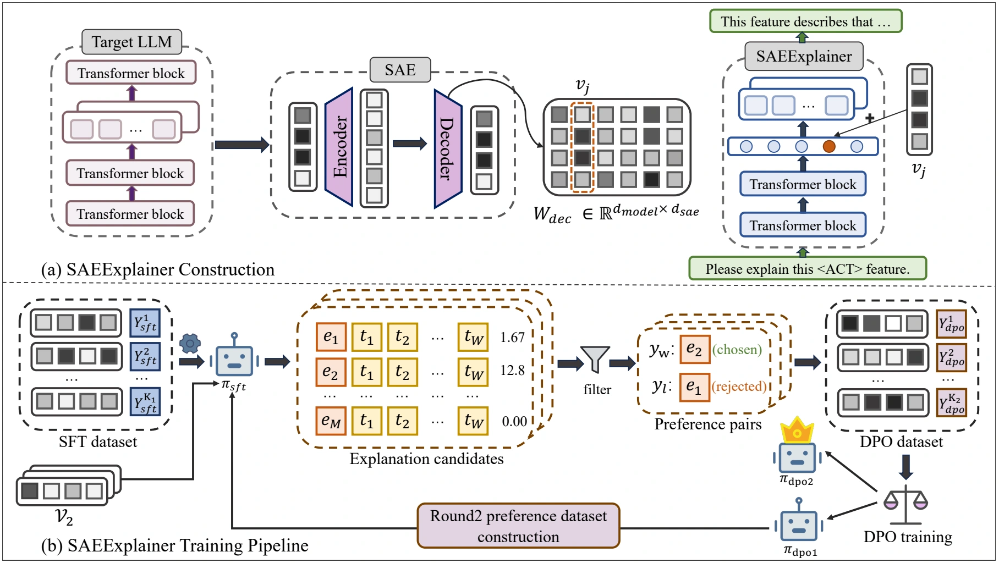

Learn to explain
Inject the SAE feature vector into the explainer’s residual stream. Supervised fine-tuning on Neuronpedia explanations establishes a foundation for decoding features into language.
SFT warm-upEMNLP 2026
† Corresponding author
FROM ACTIVATIONS TO EXPLANATIONS
SAEExplainer turns a model’s own activation feedback into a learning signal—teaching an explainer to verify, correct, and refine its descriptions of sparse autoencoder features.

Although Sparse Autoencoders (SAEs) have mitigated the opacity of large language models (LLMs) by decomposing dense representations into sparse features, explaining these features still remains a central challenge. Current explanation methods, however, typically operate within an open-loop paradigm, failing to leverage mechanistic feedback for further refinement. In this paper, we propose SAEExplainer, a training framework that utilizes activation scores as an objective reward signal to train the model for self-correction and iterative bootstrapping. By iteratively verifying and correcting foundational explanations through a two-round optimization process, SAEExplainer achieves continuous improvement in its explanatory capabilities. This mechanism significantly reduces explanation hallucinations and reinforces causal triggering patterns. Extensive experiments demonstrate our approach improves upon established baselines across most metrics, especially in causal triggering and discriminative activation.
THE METHOD
A closed loop connects natural-language explanations to the target model’s mechanistic response.
Inject the SAE feature vector into the explainer’s residual stream. Supervised fine-tuning on Neuronpedia explanations establishes a foundation for decoding features into language.
SFT warm-upGenerate candidate explanations and synthesize texts from each one. Score these texts using the target feature’s activation, pairing strong candidates with challenging negatives.
Mechanistic preferencesTrain with Direct Preference Optimization, then use the improved explainer to build a new preference dataset. A second round further sharpens explanation faithfulness.
Two rounds of DPOEXPERIMENTS
Evaluated on held-out features from Gemma-2-9B, Llama-3.1-8B, and Gemma-2-27B.
| Method | Gemma-2-9B | Llama-3.1-8B | Gemma-2-27B | |||
|---|---|---|---|---|---|---|
| Layer 1 | Layer 2 | Layer 1 | Layer 2 | Layer 1 | Layer 2 | |
| Activation Oracles | 20.33 | 26.97 | 31.17 | 21.77 | 29.67 | 10.23 |
| Neuronpedia | 21.03 | 27.77 | 33.93 | 27.87 | 37.63 | 16.17 |
| Neuronpedia w/ Claude | 40.00 | 49.43 | 55.67 | 49.67 | 44.37 | 18.80 |
| Neuronpedia w/ GPT-5 | 38.87 | 49.33 | 54.47 | 46.70 | 35.27 | 18.60 |
| SAEExplainer Ours | 46.13 | 54.50 | 58.40 | 52.33 | 53.63 | 26.63 |
“Layer 1” and “Layer 2” label the two selected evaluation layers for each model, following Table 1; they are not Transformer layer indices. See the paper for the full set of metrics and experimental settings.
A CLOSER LOOK
Gemma-2-9B · Layer 31 · Feature 1943. A case study from Table 2.
EXPLANATION
“coding syntax and elements related to web development or programming instructions”
GENERATED TEXT
In the HTML template, wrap the button inside a div, then add class="primary" and set aria-label for accessibility.
EXPLANATION (ABRIDGED)
References to the Dart programming language, dart:core, package:flutter/foundation.dart, the Zone class, async, and Future.
GENERATED TEXT
A comment in package:flutter/foundation.dart pointed to dart:core Zone behavior when an async Future was scheduled and later resolved.
Activation values are specific to this feature and generated text; they are not percentages or aggregate benchmark scores.
REFERENCE
@inproceedings{he2026saeexplainer,
title = {{SAEExplainer}: Interpreting {SAE} Features with
Activation-Guided Preference Optimization},
author = {He, Jingyi and Zhao, Haiyan and Shi, Ruxue and
Liu, Yanguang and Wang, Xin and Sun, Fei and Du, Mengnan},
booktitle = {Proceedings of the 2026 Conference on Empirical Methods
in Natural Language Processing},
year = {2026}
}